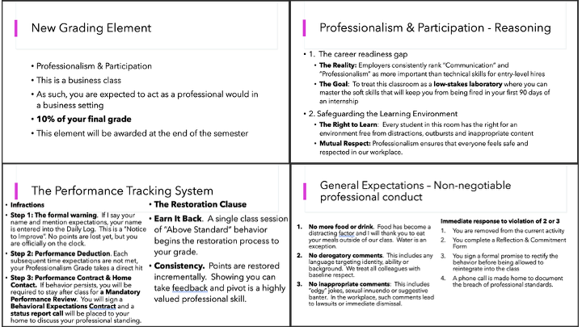
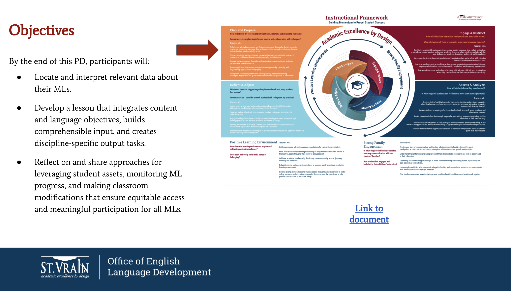
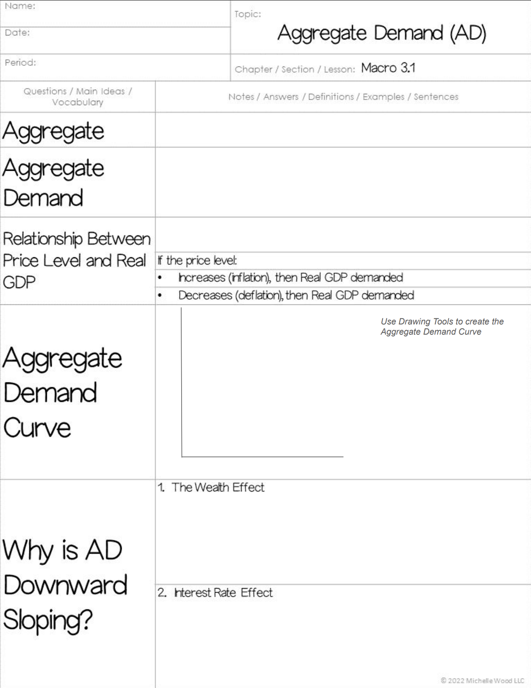

Quality Standard II
Teachers establish a safe, inclusive and respectful learning environment for a diverse population of students.
Element A – Teachers foster a predictable learning environment characterized by acceptable student behavior and efficient use of time in which each student has a positive, nurturing relationship with caring adults and peers.

I demonstrate my commitment to a predictable and positive learning environment by proactively addressing behaviors that undermine classroom culture. When a specific section became characterized by frequent interruptions and inappropriate discourse, I dedicated 45 minutes of instructional time to a comprehensive Expectation Reset. Using the attached slides (and more), I clearly defined acceptable versus unacceptable behaviors for lecture, group work, and independent study. By explicitly naming the disruptive behaviors—such as sexually explicit jokes and off-task conversations—I validated the needs of the students who were being negatively impacted, thereby restoring a sense of physical and emotional safety necessary for a nurturing environment.
To ensure these expectations remained sustainable and consistent, I implemented a Professionalism and Participation scoring system. This evidence-based practice provides students with immediate, transparent feedback on their behavioral alignment with industry standards. Rather than relying on arbitrary discipline, this system uses an efficient use of time to track daily interactions, allowing for objective data-driven conversations with students regarding their conduct. This structural shift has successfully transformed the classroom into a space where each student can focus on their learning, supported by a clear framework of mutual respect and professional accountability.
To ensure these expectations remained sustainable and consistent, I implemented a Professionalism and Participation scoring system. This evidence-based practice provides students with immediate, transparent feedback on their behavioral alignment with industry standards. Rather than relying on arbitrary discipline, this system uses an efficient use of time to track daily interactions, allowing for objective data-driven conversations with students regarding their conduct. This structural shift has successfully transformed the classroom into a space where each student can focus on their learning, supported by a clear framework of mutual respect and professional accountability.
Element B – Teachers demonstrate an awareness of, a commitment to, and a respect for multiple aspects of diversity, while working toward common goals as a community of learners.

I have demonstrated an awareness of and respect for the diverse learning needs in my classroom by participating in professional development focused on Multilingual Learners (ML) and literacy-rich instructional strategies. Even when teaching a cohort without severe language gaps, I recognize that technical subjects like Economics and Marketing require intentional vocabulary support. By attending this workshop, I have refined my ability to front-load academic language and use visual cues, ensuring that my lessons are accessible to students with varying degrees of background knowledge and linguistic comfort.
This intentional planning fosters a more inclusive community of learners by preventing "academic isolation." By applying these strategies, I ensure that my slides and materials are structured for clarity and comprehension, allowing every student to engage with the core content without being sidelined by technical jargon. This approach demonstrates my commitment to meeting students where they are, providing a supportive foundation that allows our diverse classroom to move toward common academic goals with confidence.
This intentional planning fosters a more inclusive community of learners by preventing "academic isolation." By applying these strategies, I ensure that my slides and materials are structured for clarity and comprehension, allowing every student to engage with the core content without being sidelined by technical jargon. This approach demonstrates my commitment to meeting students where they are, providing a supportive foundation that allows our diverse classroom to move toward common academic goals with confidence.
Element C – Teachers engage students as individuals, including those with diverse needs and interests, across a range of ability levels by adapting their teaching for the benefit of all students.

I engage students across a range of ability levels by utilizing intentional scaffolding techniques. To support students with diverse processing needs, I provide guided Cornell Notes pre-filled with key topics and organizational headers. This adaptation ensures that students who struggle with rapid note-taking can stay focused on the conceptual lecture and classroom discussion. By removing the stress of formatting and organization, I enable all students—regardless of their baseline speed—to produce a high-quality study tool that meets the same rigorous standards.
Beyond physical materials, I differentiate through real-time adaptive questioning. During instruction, I calibrate the complexity of my questions to match the individual levels of my students. For those requiring more support, I use leading questions that build from basic recall to application; for advanced learners, I pivot toward evaluative questions that require them to synthesize marketing or economic theories. This approach ensures that every student is appropriately challenged and remains an active participant in the lesson, regardless of their starting point.
Beyond physical materials, I differentiate through real-time adaptive questioning. During instruction, I calibrate the complexity of my questions to match the individual levels of my students. For those requiring more support, I use leading questions that build from basic recall to application; for advanced learners, I pivot toward evaluative questions that require them to synthesize marketing or economic theories. This approach ensures that every student is appropriately challenged and remains an active participant in the lesson, regardless of their starting point.
Element D – Teachers work collaboratively with the families and/or significant adults for the benefit of students.

I actively collaborate with families and stakeholders to support student success, as evidenced by my leadership during Parent-Teacher Conferences on February 11th (notes made for preparation in advance of the meeting displayed above). During these sessions, I took the lead in presenting student data, highlighting specific academic strengths, and identifying actionable areas for improvement. By facilitating these meetings under the observation of my mentor teacher, I demonstrated my ability to communicate complex performance metrics in a clear, professional, and empathetic manner.
These conferences served as a vital bridge between the classroom and home, ensuring that significant adults were fully informed and engaged in the student’s learning journey. By providing specific examples of student work and behavioral progress, I established a partnership with families aimed at a common goal: maximizing the student's potential. This proactive outreach ensures that the support system around each student is aligned and informed, creating a consistent environment for student achievement.
These conferences served as a vital bridge between the classroom and home, ensuring that significant adults were fully informed and engaged in the student’s learning journey. By providing specific examples of student work and behavioral progress, I established a partnership with families aimed at a common goal: maximizing the student's potential. This proactive outreach ensures that the support system around each student is aligned and informed, creating a consistent environment for student achievement.